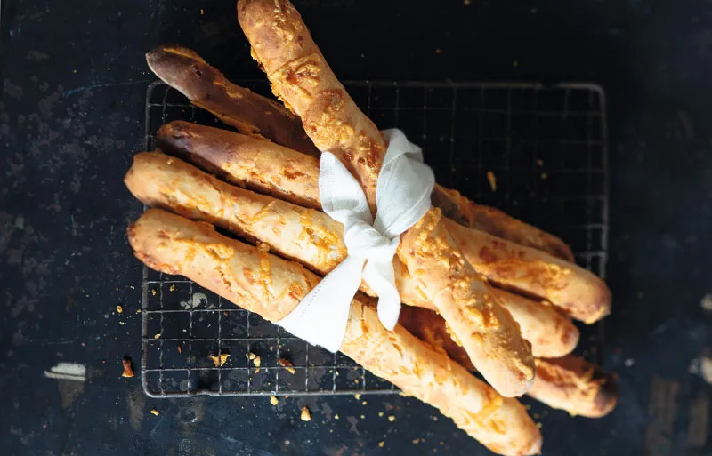

Ficelle is a long and thin French bread that is spongy and tender on the interior, and crispy on the exterior. It is commonly made with white wheat flour, just like the baguette, but it is usually about half the size of a standard baguette that is sold at most French pâtisseries.
Meal prep time : 2 hours 15 minutes
Servings : 8